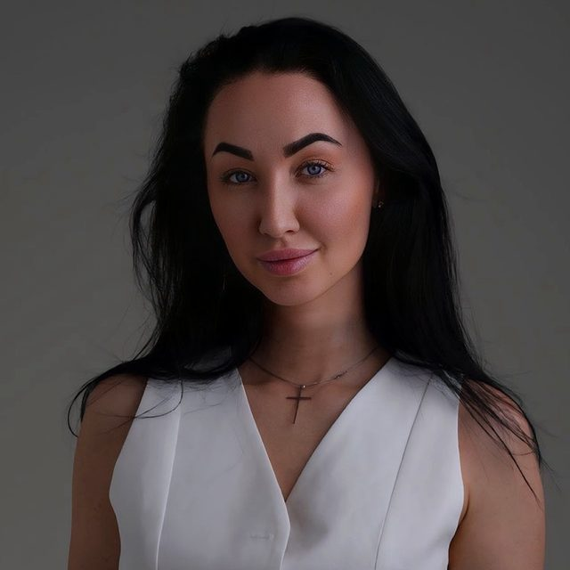

Анкета перед стартом
Две минуты. Ответы читаю я сама, больше их никто не видит. Если практика тебе сейчас не подходит, я скажу об этом до оплаты
Проверь за 7 дней, останутся ли к вечеру силы на себя и близких
Час практики в день: в 9:00 по Москве онлайн со мной или в записи в своё время. Если практика тебе сейчас не подходит, скажу об этом до оплаты, а в первый и седьмой день ты сама оцениваешь сон и силы от 0 до 10
К вечеру вроде ничего особенного не делала, а сил нет совсем. Ни на себя, ни на близких
Весь день тело держит оборону: «надо», «должна», «потом отдохну». За этими чужими голосами свой уже почти не слышно. Стресс оседает в теле: челюсть сжата, плечи подняты к ушам, дыхание короткое, будто всё время чего-то ждёшь. Ложишься и долго не можешь уснуть
Ты уже пробовала. Медитации в приложении не идут, в голове много мыслей. Кундалини по видео выходит похожей на утреннюю гимнастику, и непонятно, правильно ли ты делаешь. А ещё пишут, что кундалини опасна, и непонятно, можно ли тебе вообще
Эта неделя для тебя, если хочешь проверить на себе, что меняет час практики в день: сон, напряжение в теле, силы к вечеру. В первый и седьмой день ты это замеришь
Напиши мне, подскажу, что можно вместо
Отметь честно, от 0 до 10
Вдох на четыре счёта, выдох на восемь. Три круга
По методу «Возвращение в себя»: сначала я смотрю твою анкету, потом ты сама сравниваешь свои цифры первого и седьмого дня
Две минуты. Ответы читаю я сама, больше их никто не видит. Если практика тебе сейчас не подходит, я скажу об этом до оплаты
Каждое утро в 9:00 по Москве в Zoom. Не получается утром, запись этого занятия приходит в чат в тот же день, и ты делаешь практику в своё время. Дыхание или крия (связка движений с дыханием) и медитация. Первый день самый мягкий, дальше мы потихоньку наращиваем
Запись можно делать и вечером перед сном
Открывается 8 ноября, накануне старта, и в этот день мы знакомимся. Если захочешь, расскажешь, где ты сейчас, что чувствуешь, какие мысли. Писать необязательно, только по зову души. Все семь дней пишешь, что почувствовала и что непонятно, отвечаю я сама, каждый день. Рядом другие участницы, неделю мы проходим вместе
Сон, тревога, напряжение в теле, силы к вечеру, по шкале от 0 до 10. Сможешь сравнить себя в начале и в конце недели
Цифры будут твои
Остаётся у тебя и после потока
Это первый поток, поэтому отзывов о нём пока нет. Расскажу, что вижу у учениц, с которыми занимаюсь 1 на 1. Первые сдвиги у всех разные. У кого-то сон становится немного спокойнее, кто-то впервые за долгое время замечает, что плечи опустились. В ладонях и спине может появиться тепло или покалывание. Бывает, выходят эмоции, которые долго копились, а потом становится легче
За неделю жизнь не перевернётся. У моих учениц 1 на 1 результат складывается из встреч 2-3 раза в неделю и 10-15 минут своей практики каждый день. За 7 дней ты поймёшь, как практика работает на тебе, и сама решишь, хочешь ли идти дальше. В последний день расскажу, как можно продолжить. Выбирать будешь по своим цифрам
Кундалини-йога работает с дыханием и энергией тела, поэтому до оплаты мы проверяем, что практика тебе подходит
Сейчас эта программа не подойдёт, если у тебя:
Если что-то из списка про тебя, напиши мне, подскажу, что можно вместо этой программы. Если бывают панические атаки, тоже напиши до оплаты, вместе решим, как тебе заниматься
Я веду по своему методу «Возвращение в себя»
Мы за практику, которую можно проверить на себе. До оплаты я смотрю твою анкету и говорю, подходит ли тебе практика, а в первый и седьмой день ты сама оцениваешь сон и силы от 0 до 10. Мы за практику каждый день: утром вместе онлайн или в записи в своё время, потихоньку и вместе в чате. Мы против обещаний на слово и против спешки. Таймеров и «только сегодня» не будет, цена и условия возврата написаны прямо, и решаешь ты сама

Я Ксения Новосёлова, сертифицированный проводник кундалини-йоги, обучение проходила у Юлии Чай. В кундалини около двух лет, пришла в неё через садхану, ежедневную практику. Я тоже долго жила так, как от меня ждали, и не замечала этого. Веду занятия 1 на 1 онлайн и сейчас учусь в международной школе кундалини-йоги Амрит Нам Саровар
Ко мне часто приходят те, кто уже пробовал заниматься по видео и бросил, потому что некому было подсказать. Я долго думала, как сделать короткий формат и не оставить человека одного с записью. Поэтому все семь дней я в чате: пишешь, что почувствовала, и мы вместе смотрим, что делать дальше
Передумала до старта или в первые три дня потока, верну всё. С 12 ноября верну за дни, которые ещё не начались. Если противопоказание выяснилось после оплаты, верну полностью в любой день. Подробно в оферте
Не нашла свой вопрос? Напиши мне в Telegram @ksenia_fokus
Да. Первый день самый мягкий, на занятии я объясняю, что мы делаем и зачем. В анкете отметишь свой опыт, и я буду это учитывать в чате
Занятие длится час. Не получается в 9:00, включаешь запись в тот же день, когда тебе удобно. Чат можно читать в любой момент дня
Тогда включи запись сразу с медитации. Под каждой записью в чате я напишу, с какой минуты она начинается
Как тебе удобно. Занятие записывается, но в запись попадаю только я: микрофоны участниц во время записи выключены, имя в Zoom можешь поставить любое
Светлая и свободная, в которой удобно двигаться и дышать, не обязательно белая. Тюрбан не нужен, платок по желанию
Чаще всего то, что поднимается, нормально: слёзы, раздражение, усталость. Тогда делаешь мягче и пишешь в чат. Что делать в остальных случаях, подробно расписано в памятке, она будет у тебя до старта
Нет. Это практика: дыхание, движение и медитация. Она не заменяет врача и психотерапевта, и если состояние острое, сначала к врачу
Нет. Религиозной части в программе нет, мы работаем с дыханием, телом и внутренним состоянием. В практике есть мантры на гурмукхи: слова простые и пришли из сикхской традиции, язык знать не нужно. Мы используем их как звук и вибрацию в теле. Если твоя вера не позволяет петь мантры, не пой, это только твоё решение. Я никого не заставляю